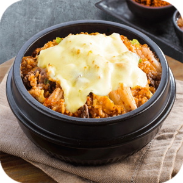
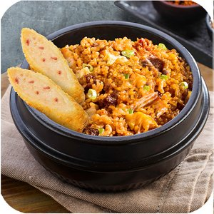
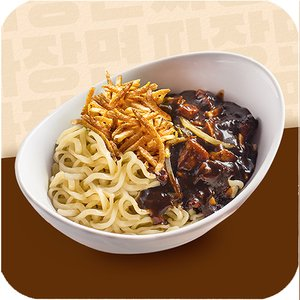
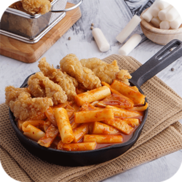
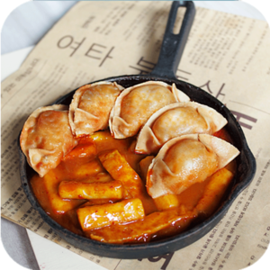
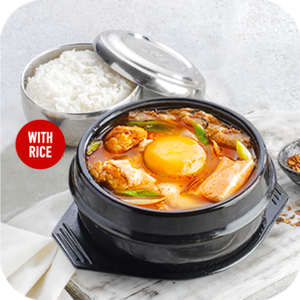
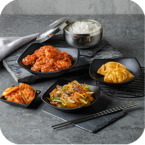
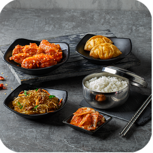
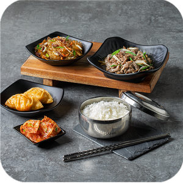
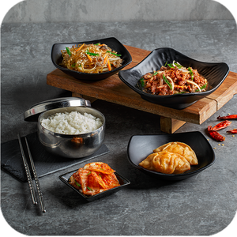

- Sarapan Ala Korea -
Nasi goreng khas Korea dengan perpaduan Kimchi yang sehat tersedia dalam 2 topping favorit.


Kimchi Fried Rice with Cheese
Kimchi Fried Rice with Oden
- Sambil Nonton Drama Korea -
Menu Favorit Korea yang bisa temani kamu Nonton Drakor.




Jajangmyeon
Topokki with Korean Chicken
Topokki with Mandu
Sundubu Jigae with Rice
- Paket Set Lengkap -
4 menu Korea Favorit dalam 1 Paket.




Super Joy 1 Korean Chicken Original
Super Joy 1 Korean Chicken Spicy
Super Joy 2 Beef Bulgogi Original
Super Joy 2 Beef Bulgogi Spicy